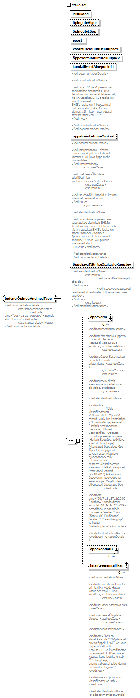

| diagram |  | ||||||||||||||||||||||||||||||||||||||||||||||||||||||||||||||||||
| namespace | http://www.ern.ee/õpe | ||||||||||||||||||||||||||||||||||||||||||||||||||||||||||||||||||
| children | õppevorm õppekoormus finantseerimisallikas | ||||||||||||||||||||||||||||||||||||||||||||||||||||||||||||||||||
| used by |
|
||||||||||||||||||||||||||||||||||||||||||||||||||||||||||||||||||
| attributes |
|
||||||||||||||||||||||||||||||||||||||||||||||||||||||||||||||||||
| annotation |
|
||||||||||||||||||||||||||||||||||||||||||||||||||||||||||||||||||
| source | <xs:complexType name="tudengiÕpinguAndmedType"> <xs:annotation> <xs:documentation> <xsd:documentationDetails> <xsd:standardisationNotes> <xsd:note time="2017-12-21T00:00:00">Eemaldatud "kursus".</xsd:note> </xsd:standardisationNotes> </xsd:documentationDetails> </xs:documentation> </xs:annotation> <xs:sequence> <xs:element ref="õppevorm" minOccurs="0" maxOccurs="unbounded"/> <xs:element name="õppekoormus" type="klassifikaatorType" minOccurs="0" maxOccurs="unbounded"/> <xs:element ref="finantseerimisallikas" minOccurs="0" maxOccurs="unbounded"/> </xs:sequence> <xs:attribute name="isikukood" type="isikukoodType" use="required"/> <xs:attribute name="õpinguteAlgus" type="xs:date"/> <xs:attribute name="õpinguteLõpp" type="xs:date"/> <xs:attribute name="epost"/> <xs:attribute name="koormuseMuutuseKuupäev" type="xs:date"/> <xs:attribute name="õppevormiMuutuseKuupäev" type="xs:date"/> <xs:attribute name="kumlatiivsedAinepunktid" type="xs:decimal"> <xs:annotation> <xs:documentation> <xsd:documentationDetails> <xsd:standardisationNotes> <xsd:note>"Kuna õppeasutuses kasutatakse sisemiselt EHISe definitsioonist erinevat lähenemist, siis arvutatakse EHISe jaoks xml moodustamisel EHISe jaoks xml-i koostamisel kõik sooritatud EAP, ÕISis olemas väli - koormusarvutusel arvesse minevad EAP" </xsd:note> </xsd:standardisationNotes> </xsd:documentationDetails> </xs:documentation> </xs:annotation> </xs:attribute> <xs:attribute name="õppekavaTäitmiseOsakaal" type="xs:decimal"> <xs:annotation> <xs:documentation> <xsd:documentationDetails> <xsd:interpretation>Eelmistel semestritel õppekava kohaselt täitmisele kuuluva õppe maht protsentides. </xsd:interpretation> <xsd:useCases> <xsd:useCase>Üliõpilase edasijõudmise analüüsimiseks.</xsd:useCase> </xsd:useCases> <xsd:issues> <xsd:issue>Kõik ülikoolid ei kasuta sisemiselt sama algoritmi. </xsd:issue> </xsd:issues> <xsd:standardisationNotes> <xsd:note>Kuna õppeasutuses kasutatakse sisemiselt EHISe definitsioonist erinevat lähenemist, siis arvutatakse EHISe jaoks xml moodustamisel. /Kõikides õppeasutustes ei ole sisemiselt kasutusel; ÕISIs väli puudub, sisestavad ainult EHISesse</xsd:note> </xsd:standardisationNotes> </xsd:documentationDetails> </xs:documentation> </xs:annotation> </xs:attribute> <xs:attribute name="õppekavaTäitmiseOsakaaluKuupäev" type="xs:date"> <xs:annotation> <xs:documentation> <xsd:standardisationNotes> <xsd:issues> <xsd:issue>Kasutusvajadus ebaselge </xsd:issue> <xsd:issue>Õppeasutused kasutavad nt andmete EHISesse saatmise kuupäeva </xsd:issue> </xsd:issues> </xsd:standardisationNotes> </xs:documentation> </xs:annotation> </xs:attribute> </xs:complexType> |
attribute tudengiÕpinguAndmedType/@isikukood
| type | isikukoodType | ||||||
| properties |
|
||||||
| facets |
|
||||||
| source | <xs:attribute name="isikukood" type="isikukoodType" use="required"/> |
attribute tudengiÕpinguAndmedType/@õpinguteAlgus
| type | xs:date |
| source | <xs:attribute name="õpinguteAlgus" type="xs:date"/> |
attribute tudengiÕpinguAndmedType/@õpinguteLõpp
| type | xs:date |
| source | <xs:attribute name="õpinguteLõpp" type="xs:date"/> |
attribute tudengiÕpinguAndmedType/@epost
| source | <xs:attribute name="epost"/> |
attribute tudengiÕpinguAndmedType/@koormuseMuutuseKuupäev
| type | xs:date |
| source | <xs:attribute name="koormuseMuutuseKuupäev" type="xs:date"/> |
attribute tudengiÕpinguAndmedType/@õppevormiMuutuseKuupäev
| type | xs:date |
| source | <xs:attribute name="õppevormiMuutuseKuupäev" type="xs:date"/> |
attribute tudengiÕpinguAndmedType/@kumlatiivsedAinepunktid
| type | xs:decimal | ||
| annotation |
|
||
| source | <xs:attribute name="kumlatiivsedAinepunktid" type="xs:decimal"> <xs:annotation> <xs:documentation> <xsd:documentationDetails> <xsd:standardisationNotes> <xsd:note>"Kuna õppeasutuses kasutatakse sisemiselt EHISe definitsioonist erinevat lähenemist, siis arvutatakse EHISe jaoks xml moodustamisel EHISe jaoks xml-i koostamisel kõik sooritatud EAP, ÕISis olemas väli - koormusarvutusel arvesse minevad EAP" </xsd:note> </xsd:standardisationNotes> </xsd:documentationDetails> </xs:documentation> </xs:annotation> </xs:attribute> |
attribute tudengiÕpinguAndmedType/@õppekavaTäitmiseOsakaal
| type | xs:decimal | ||
| annotation |
|
||
| source | <xs:attribute name="õppekavaTäitmiseOsakaal" type="xs:decimal"> <xs:annotation> <xs:documentation> <xsd:documentationDetails> <xsd:interpretation>Eelmistel semestritel õppekava kohaselt täitmisele kuuluva õppe maht protsentides. </xsd:interpretation> <xsd:useCases> <xsd:useCase>Üliõpilase edasijõudmise analüüsimiseks.</xsd:useCase> </xsd:useCases> <xsd:issues> <xsd:issue>Kõik ülikoolid ei kasuta sisemiselt sama algoritmi. </xsd:issue> </xsd:issues> <xsd:standardisationNotes> <xsd:note>Kuna õppeasutuses kasutatakse sisemiselt EHISe definitsioonist erinevat lähenemist, siis arvutatakse EHISe jaoks xml moodustamisel. /Kõikides õppeasutustes ei ole sisemiselt kasutusel; ÕISIs väli puudub, sisestavad ainult EHISesse</xsd:note> </xsd:standardisationNotes> </xsd:documentationDetails> </xs:documentation> </xs:annotation> </xs:attribute> |
attribute tudengiÕpinguAndmedType/@õppekavaTäitmiseOsakaaluKuupäev
| type | xs:date | ||
| annotation |
|
||
| source | <xs:attribute name="õppekavaTäitmiseOsakaaluKuupäev" type="xs:date"> <xs:annotation> <xs:documentation> <xsd:standardisationNotes> <xsd:issues> <xsd:issue>Kasutusvajadus ebaselge </xsd:issue> <xsd:issue>Õppeasutused kasutavad nt andmete EHISesse saatmise kuupäeva </xsd:issue> </xsd:issues> </xsd:standardisationNotes> </xs:documentation> </xs:annotation> </xs:attribute> |
element tudengiÕpinguAndmedType/õppekoormus
| diagram |  |
||||||||||||||||||
| namespace | http://www.ern.ee/õpe | ||||||||||||||||||
| type | klassifikaatorType | ||||||||||||||||||
| properties |
|
||||||||||||||||||
| attributes |
|
||||||||||||||||||
| source | <xs:element name="õppekoormus" type="klassifikaatorType" minOccurs="0" maxOccurs="unbounded"/> |
XML Schema documentation generated by XMLSpy Schema Editor http://www.altova.com/xmlspy